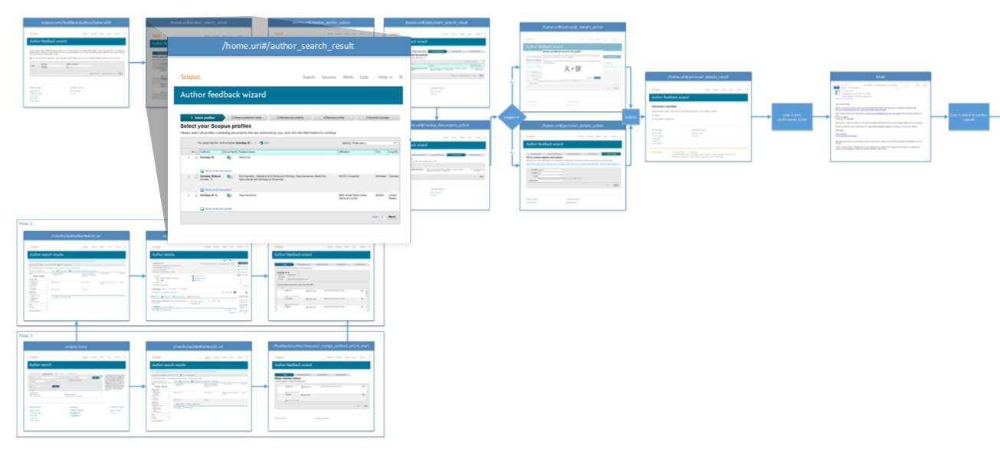
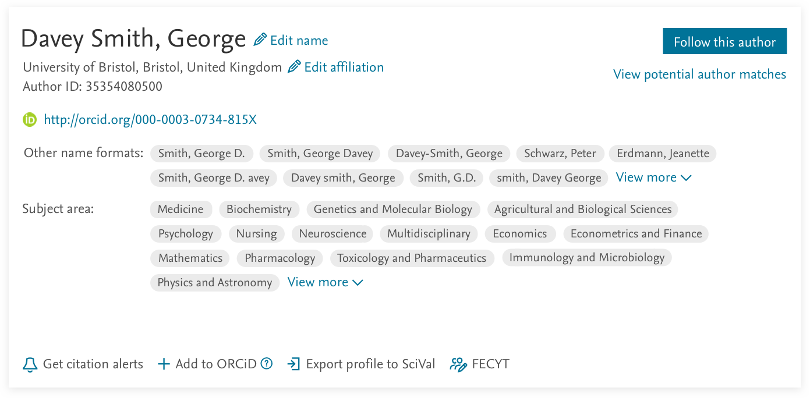
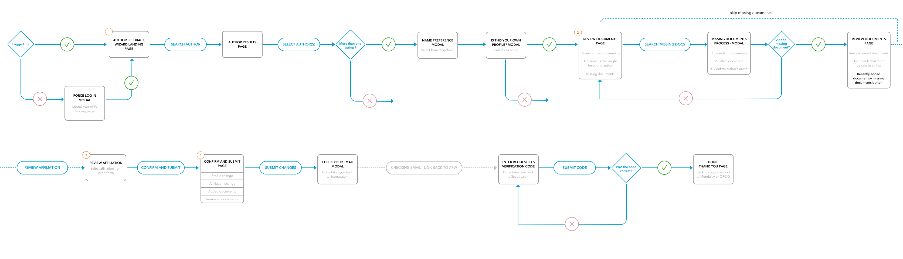
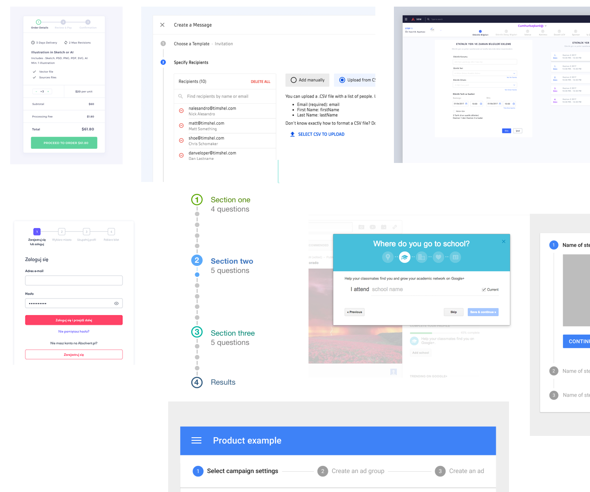
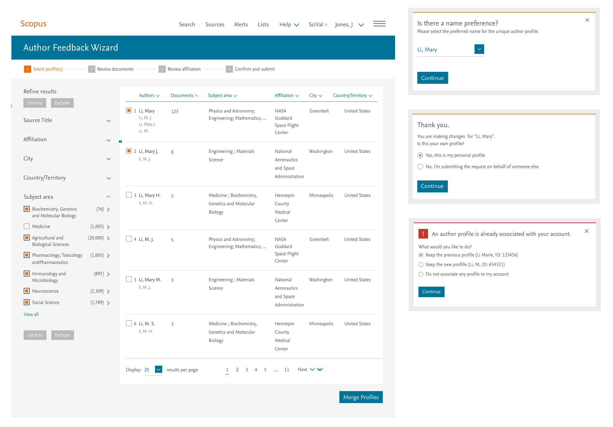
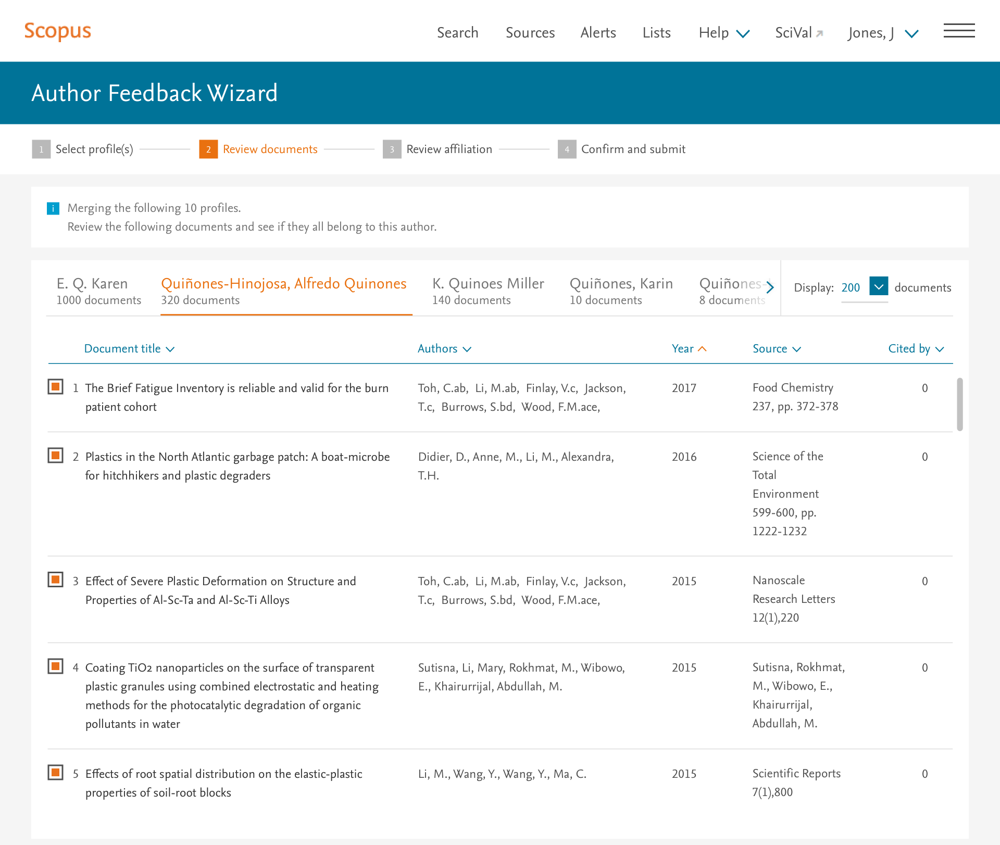
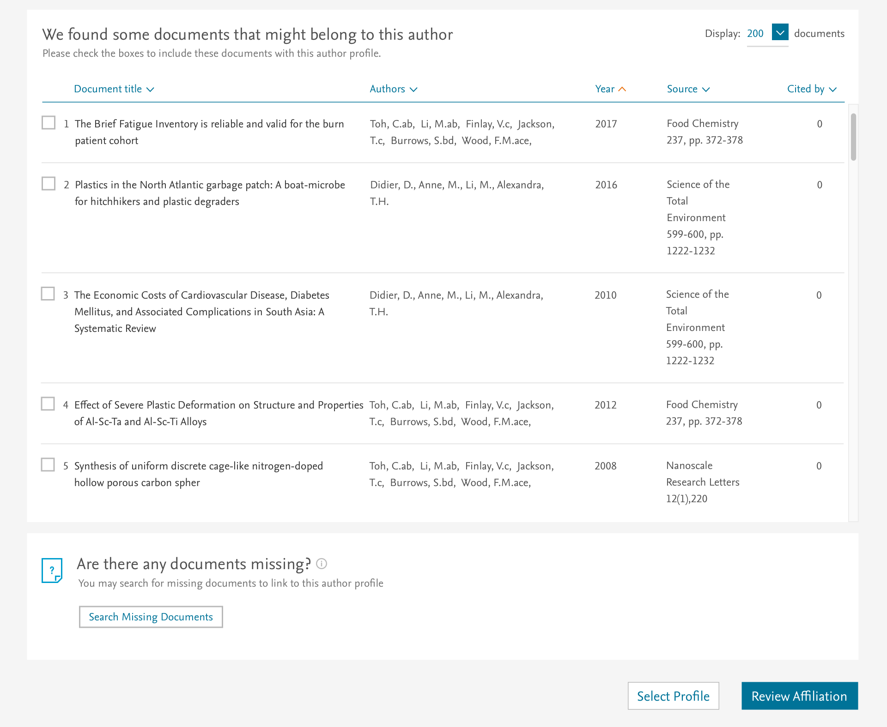
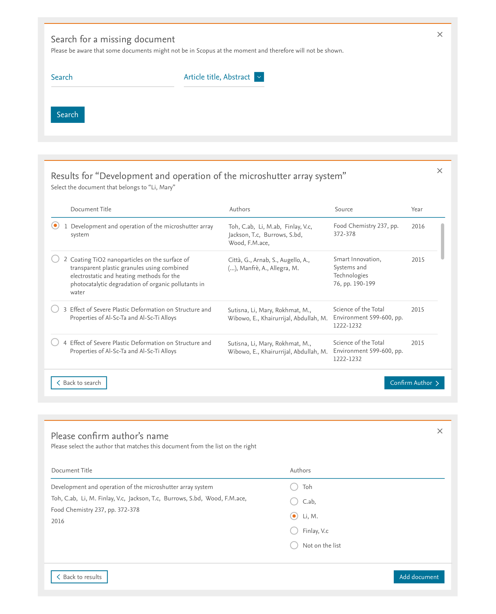
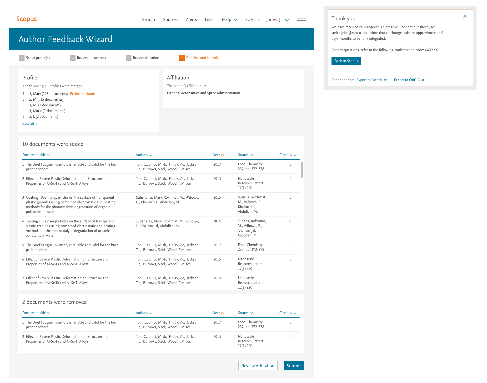
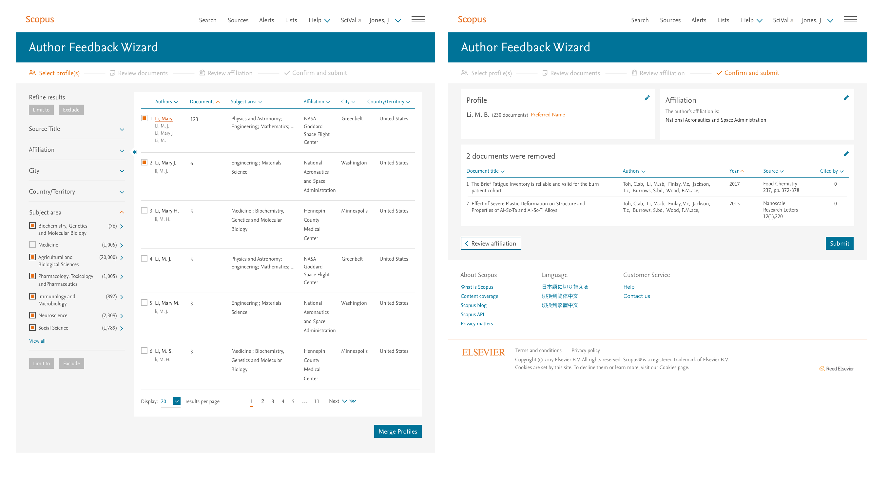

Research, product strategy, interaction design and visual design
Worked with:
2 PMs, 10 devs and creative director
Scopus research data is used by many ranking organizations around the world, as well as funding bodies who are looking to allocate financial resources to researchers and departments. It is important for any published author, who is seeking funding, to have an accurate description of her accomplishments displayed in our platform. Scopus prioritizes keeping its data as accurate as possible, but it doesn’t always get it right. To support the creation of quality profiles, Scopus needs authors to validate and at times make corrections to their profiles. Over ten years a go, a solution was created to resolve the issue of incorrect profiles, Scopus called it the Author Feedback Wizard (AFW). In the last five years, the interface began having problems processing requests. This lead to a serious influx of calls to our line support and frustration in our user base.
Discovery phase
Emails, recorded calls and long chat complaints were compiled by our line support, for our team to review. This qualitative feedback was the first step to figuring out the users’ pain points. In the feedback, we could see that users were mainly calling to correct attributions that could not be modified by going through AFW. One of the most frequent requests was the correction to an author’s affiliation or institution (could be a university, corporate entity, etc). The ability to change, or rather update one’s institution is important as an author’s impact is directly related to the institution’s impact and reputation.

Old AFW user flow
While reviewing the qualitative feedback was valuable for understanding what we lacked in general, I needed to better understand where and how users were failing in the current AFW process. To better understand specific drop-off locations and/or points of inefficiency, I looked through our analytics. In it, I could see that 90% of the drop-offs happened almost at the last step of the process and the competition rate overall was nearing 30%.
user feedback on old AFW process
Ideation phase
Based on the research, I knew we needed to think of a better, more effective way to make author corrections. The first idea that came to mind was to deviate from the wizard model to a more common pattern (used by Facebook, Linkedin and any other site with profiles in it), that is embedding “edit” links next to any attribute that can be modified.

Author profile card from Scopus
Unfortunately this idea did not last long. There was a large technical effort involved if we decided to proceed with our idea. An effort that was estimated would push back our delivery date by half a year or more.
After several meetings with stakeholders, we agreed upon keeping the wizard workflow. During these meetings we brainstormed the new features to be introduced and further discussed the placement of certain actions throughout the process. I created user flows with the decisions we had made so far.
User flow for when author comes from Scopus

Exploratory user flow for creating an experience independent from Scopus
Wireframes and mood board
Having partially flushed out the new user flow, it was now time elaborate a little more on each page. But before starting on the wireframes, I took some time to study many different products that do similar wizard-like workflows. This helped me better prioritize the components I wanted to work on fist. One of the things I chose to elaborate on first was the progress indicator. As I explored different placements and layout options for the progress indicator, I also started thinking about the rest of the page(s) and how everything would come together.

Created a moodboard of differnt progress indicators
After we had aligned on certain key ideas to be introduced on this new AFW, I began putting together a rough but accurate representation of the workflow in wireframes.
Step 1 – Select profile(s)
Moving forward, I tackled every page for each step of the process. The first one was selecting the author(s) to make corrections for. One important added feature was the ability to filter the author results, to facilitate the finding of specific authors. After the selection screen, I worked on the modals that needed to validate the author’s profile.

Step 2 – Reviewing documents
Though it wasn’t common for users to select more than 5 authors to merge, it was necessary for the interface to handle up to 10 authors merged into one. This was an edge case but one that needed to be addressed.

There are primarily two things users need to do here: 1) find and add any missing documents 2) remove any documents that did not belong in the profile. For authors with few documents, this exercise can be fairly easy, as they'd have a good idea of what documents might be missing. However, for authors with over 100 published documents, remembering all their publications become an impossible task. To facilitate the finding of missing documents for all authors, but especially those with many publications, we created a section of “suggested documents.”

To finalize Step 2, I proposed a workflow within the page that would allow users to search, find and add documents on the page. The difficulties, in providing such function, were: 1) keeping the user on the page 2) porting a mini version of the document search into a modal.

In an ideal scenario, a user could add a missing document in three steps as seen above. However, if by any chance their name was not in the original publication, an original document (PDF) was required for validation. Many other nuances would make this subtle workflow, an experience with endless possibilities.
Designing edge cases and error prevention
Step 3 – Review affiliation
The third step of this sequence dealt with the modification of an author’s affiliation/institution. It was the shortest step of all as the options would be limited to only the affiliations the author had published from.
Step 4 – Confirm and submit
The final step was a summary of the changes/corrections that the user wanted to request. It was important in this final step, to create a well thought out layout that could easily be scanned for confirmation.

User testing
With the process almost fully designed, I proceeded to create a prototype for user testing. In the test, I went through all major use cases (adding and removing documents, updating affiliation, merging profiles, etc) and users performed quite well in every scenario. Some suggestions we took to further improve the experience were: 1) adding “edit” links to easily jump from the confirmation page to specific parts in the path 2) making the the author names clickable (opening in new tabs) to let users see more information about the author before requesting any changes and lastly 3) changing the button from “review documents” to “merge profiles” if more than one author has been selected.

Progress indicator changed from numbers to icons
Conclusion
AFW 2.0 was a massive success as it went from having 30% conversion rate to almost 90% conversion rate. We had less calls in our line support and now more time to focus on building a robust backend that would allow for better solutions.